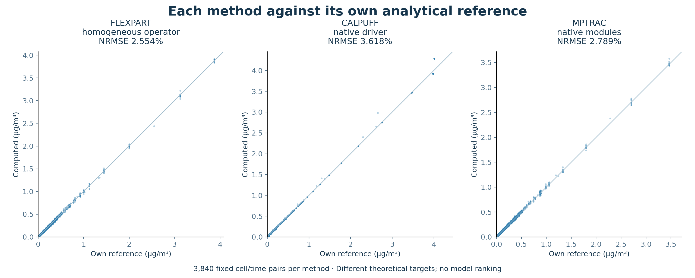
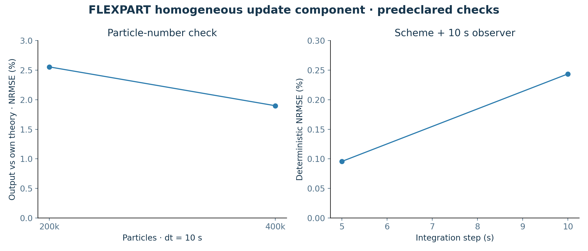

Each diffusion law.
Its own analytical reference.
Fixed continuous source · 1 g/s · 500 m AGL · 1 hour · 3,840 pairs each
Verification scope matters. FLEXPART is a new homogeneous test of literal source-extracted update blocks, not validation of the earlier full nonuniform PBL run. CALPUFF reuses the full native driver. MPTRAC reuses native advection/diffusion modules. Each row has its own theoretical denominator; this is not a model ranking.

| Calculation | RMSE · µg/m³ | NRMSE | Max |error| · µg/m³ |
|---|---|---|---|
| FLEXPART · homogeneous source-extracted operator | 0.008928 | 2.554% | 0.111687 |
| CALPUFF · native driver | 0.016154 | 3.618% | 0.322505 |
| MPTRAC · native modules | 0.008982 | 2.789% | 0.108705 |
The primary residuals include source/time discretization, observation integration and finite-particle sampling. They must not be described as pure solver truncation errors.
FLEXPART: a test with a known solution
The horizontal Euler/exponential switch, unnormalized vertical OU update and ground reflection blocks are copied literally from the local advance_mod.f90 and compiled as Fortran REAL32. The harness fixes uniform coefficients, starts velocities in their stationary Gaussian distribution and supplies seeded Gaussian inputs. It does not verify the native RNG, Hanna parameter diagnosis, meteorological interpolation, or the complete production driver.
Here T = 60 s, σx = σy = √(50/60) and σz = √(5/60) m/s, rounded to the actual native input precision. Uniform density removes the gradient drift. A reflected-image integrated-OU kernel represents the flat specular ground. No forecast or original full-PBL run is repeated.

- 200,000 particles / 10 s: 2.554% aggregate NRMSE.
- 400,000 particles / 10 s: 1.898%; this is a predeclared sampling check, not a replacement selected because it looks better.
- Deterministic covariance propagation separates scheme plus observation bias: 0.244% at 10 s, 0.096% at 5 s. Particle noise remains in the primary score.
The old full-PBL run still has no strict own-law closed-form error reported. The new component result cannot be used to relabel that old run as verified.
CALPUFF: its actual Draxler law
The actual external σv = 0.91287093 and σw = 0.12727922 m/s, lateral Ty = 60 s, vertical reciprocal time scale 0.002 s⁻¹ and 1 m virtual-source widths are retained. Integrating its own age-dependent Gaussian kernel for a continuous source gives 3.618% NRMSE. Applying the same original 3 × 3 × 3 spatial receptor observer to the theory reduces the residual to 1.225%. The receptor cubature itself differs from the exact box mean by 4.069%; these norms cannot be added or subtracted because errors can cancel.
MPTRAC: match the final physical coordinate
The explicit −KΔt/H increment is not itself the physical-height drift. Conversion back from the actual linear pressure step adds +KΔt/H to leading order, cancelling it. A 64-point Gaussian-Hermite one-step check confirms the physical-height continuous generator is reflected constant-K diffusion for this build. The earlier −K/H physical-drift companion and its 2.804% score are withdrawn; original records remain preserved.
Against the correct physical-height reference: 2.789% aggregate NRMSE. Matching the 10 s time observer changes it only to 2.789%; observer bias alone is 0.00356%. The run has 200,000 parcels, native ground reflection, finite nonnegative fields, and inventory error below 10⁻¹¹ kg.
Continuous-source reference and accuracy
All comparisons use the same 320 fixed three-dimensional cells and 12 five-minute means, but each kernel Gm belongs to its corresponding settings. Reference quadrature is independently tightened from 12 to 24 Gauss points. Discrete-step reference panels align with actual time-step phase boundaries; the unchanged numerical tolerance is enforced. No coefficients, source strengths, or masks are fitted to outputs.
What remains unverified
These are passive-tracer tests with flat ground and prescribed wind; heat rise, chemistry, deposition, complex terrain and real weather are outside scope. Two particle counts and two step sizes are diagnostic checks, not an exhaustive convergence proof. The entire original FLEXPART nonuniform PBL pipeline has not acquired an analytical verification score. No new large video was rendered.